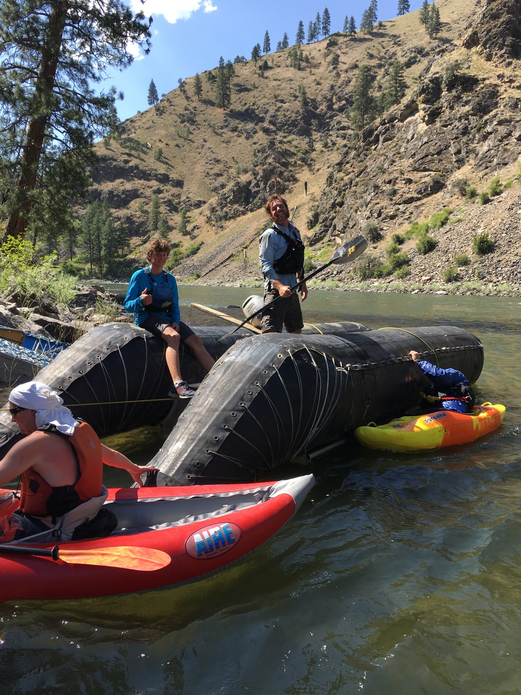

I was 16 years old when I became a river guide on the Middle Fork and Main Salmon rivers. Because I was still under age, my responsibility was to transport all the equipment, because this didn't involve me having guests (liabilities) on my boat. Instead, I transported a much less talkative, and much more heavy payload that resembled 3000lb, moving bed and breakfast. After an already exhausting 90 miles down the Middle-Fork of the Salmon, I met 6 fellow river guides at the Main Salmon put-in. There I was to "run gear" for a group of 28 guests the next morning.
About 10 miles down river, I caught up with a fellow gear runner for another team. Squinting my eyes, I saw him bent over tinkering on his 10 horsepower motor. As I drew closer, the horizon of Devils Tooth Rapid appeared. To my dismay, this fellow boatman failed to get far enough right to avoid a house side rock that most of the river converged into. As this 24' J-Rig smashed into the rock, its left pontoon scraped up this devilish boulder, and there I saw my friend-- riding the opposite pontoon like a helpless cowboy, before took a deadly swim under a spiderweb of camping gear.
Let me tell you, OH CRAP were not the first words to come out of my- until then- innocent mouth. And when I came to, I realized that I too was heading for that same trap. And if I wanted any chance of keeping my job, I needed to get much farther right. After greasing the rapid I had a passenger I was traing dock the boat at camp (which convienently was right below the rapid.)
In an attempt to catch up with this floating booby trap, I ran 4 miles down some of the most (as my grandpa would say) asenine terrain I had ever encountered. After taking multiple plunges into boulder fields, poisen ivy, and thorn bushes, I finally reached my friend, who, when I last saw him was riding on the top of his upsidown lump of rubber. In the meantime, I managed to rescue a guitar, multiple tables, chairs, first aid supplies, and guest bags from eddie pools in the river.
 Moments after encountering the J-RigThat night our camp looked much less like a high-class camping experience, and more like a refuge camp. 60 guests were crammed on the beach, with their soaking posessions creatively hung on oars, straps and trees. After eavesdropping on a heated satelite phone call with my boss, I overheard the words I dreaded most: "Someone is going to have to run to the boat ramp early tomorrow morning to retrieve emergency supplies." Before I became volunteered (everyone knew I was an Ultra Runner), I decided to take one for the team.
There I went, another 13 miles uphill in this same asenine terrain. When I reached the boatramp, my boss waited with a replacement boat that would help us evacuate our guests downriver. The catch was, we also had to limp down our totaled J-Rig down another 80 miles of whitewater
Experiences like these have helped me learn how to operate under pressure, develope critical decision making skills, and build character.
Summer 2022
Most people spend their summers stretched out on beaches, traveling the world, or at a summer internship. Like prior summers, I planned to spend mine knocking doors selling pest control and solar. Days before the strenuous drive across the country to Bridgewater NJ, I was hit by a car while riding my bike home from campus. Lukily, after my head went through the windshield, and an unintentional backflip that could've qualified me for the olympics, I landed somewhat upright 15 feet behind the car. After a trip to the ER, a concussion, broken foot, and missing finals, the show went on. Less than 2 weeks later, I was stumbling up a doorstep in crutches about to pitch my first customer of the summer.
I had made a goal at the beginning of the year to sell over $300,000 in personal revenue, and nothing was going to stop me.
Knocking doors on crutches was about as effective as it sounds, but after I recovered I began to build momentum. By the end of July I was just under $200,000. With less than a month left, it was go-time. My momentum was interrupted yet again when an exposed wire in the street wrapped around my segway tire and sent me overboard. After assesing the damage, I walked away with only some bumps and bruises... Until persistent pain lead to an X-Ray, lead to an MRI, lead to the discovery of a broken wrist.
Nothing worth doing was ever achieved without effort.
I persisted. Knocking doors with a cast. I wasn't able to achieve my revenue goals by the first day off BYU, but I was too close to give up- especially after all I'd been through. All it took was a few seconds of courage to book a plane ticket to San Diego, and an online class schedule to work with to bridge the $50,000 gap to help me reach my goal. After gaining some momentum in San Diego, my sales streak was interupted yet again. After knocking a door, I heard what sounded like a monster growl from behind. The 3" thick door of protection was an illusion. To my horror I saw out of the corner of my eye a 100 pound pitbull sprinting towards me from an open garage. Knowing that running would only worsen my case, I stood my ground-- trying not to expose any limbs to this slobbery nightmare. Unfortunately, I left some of my "vitals" explosed and the dog bit me too far down south to talk about publicly.
The owner, a complete jerk, offered me no remedies. After a trip to a local restaurant bathroom, and a call to a urologist, I was able to get back on the doors (after a couple days). I ended up ahcieving my goal, selling my last account after 8:30pm, after it had been dark for multiple hours allready. From this experience, I learned persistence and grit. Sometimes we are not dealt the right hand in life, and where there is a will, you bet there's a way.
 My final sale of the summer. Can you see it in my eyes?
My final sale of the summer. Can you see it in my eyes?
Gratefully, my life is full of experiences like this. Experiences that cause you to pause, learn, take a deep breath, and LIVE!